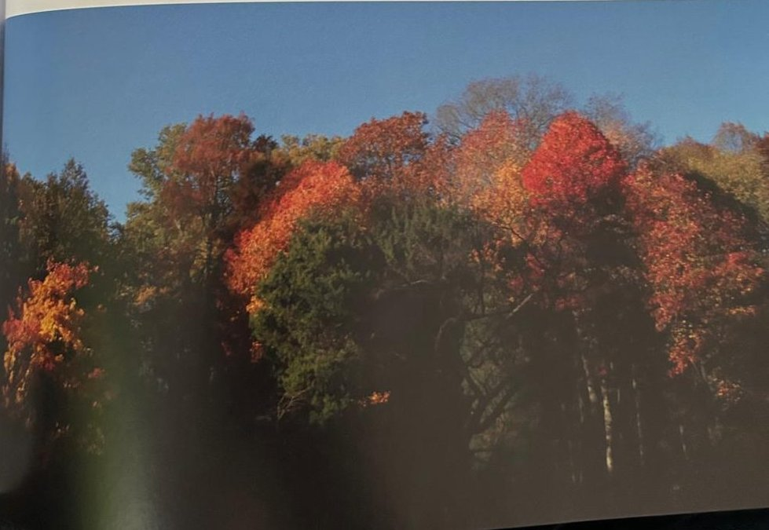
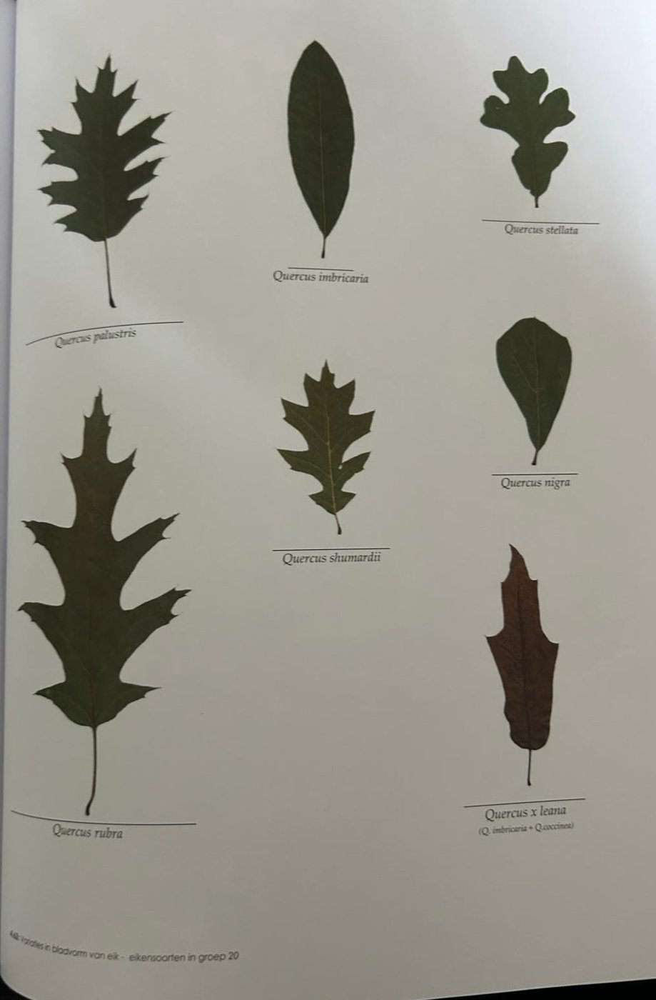

Groepen › Nieuwe Wereld
20. North Carolina, Kustvlakte

In North Carolina komen we in een min of meer mediterraan klimaat terecht, maar vochtiger en de neerslag is over het hele jaar vrij goed verdeeld. Het reliëf is er getrapt : een brede kustvlakte, dan met een steile overgang het Piedmont hoogplateau en dan omhoog naar de Blue Ridge in het Appalachengebergte. Van de dennenbossen in de kustvlakte is in Groep 20 nog weinig te bespeuren. Er staat een keur aan weinig gekende Amerikaanse eiken : Shumard-eik, Verfeik, Paaleik, Lauriereik, Zwarte Eik, Virginia-eik. Voorin de arboretumgroep maken amberbomen in de herfst grote sier met hun veelkleurig blad. Achterin is, op een paar exemplaren na, een jongere aanplanting van Zwarte berk verloren gegaan. De vrijgekomen plek sloot aan bij een opening in het restant van het zomereikenbos en de zo ontstane corridor biedt een nieuwe vista van bovenaf. De corridor wordt momenteel opgevuld met kleinere boomsoorten en struiken : Oostamerikaanse Judasboom, Rode moerbei, Tupelo, amelanchiers, meidoorns, appelbes, … De aanplantingen zijn tijdelijk beschermd door een afsluiting om reeschade te voorkomen.
Uit het boek
0,60 ha · 51 soorten · 514 bomen
- Elf eikensoorten en de twee oudste moerascipressen van het arboretum (1908).


Bron: Geografisch Arboretum Tervuren. Een wereldreis rond bomen (2020), p. 176 en volgende.
Deelgroepen
- 20 – North Carolina
Soorten in deze groep (60)
- Tilia americanaAmerikaanse linde · 58 bomen
- Liquidambar styracifluaAmerikaanse amberboom · 56 bomen
- Prunus serotinaAmerikaanse vogelkers · 36 bomen
- Quercus velutinaVerfeik · 33 bomen
- Quercus nigraZwarte eik · 25 bomen
- Crataegus uniflora24 bomen
- Quercus stellataPaaleik · 20 bomen
- Betula nigraZwarte berk · 16 bomen
- Taxodium distichumMoerascipres · 16 bomen
- Morus rubraRode Moerbei · 15 bomen
- Juniperus virginianaVirginische jeneverbes · 14 bomen
- Cercis canadensisOost-Amerikaanse judasboom · 13 bomen
- Crataegus phaenopyrum13 bomen
- Cephalanthus occidentalisKogelbloem · 12 bomen
- Quercus shumardiiShumardeik · 11 bomen
- Callicarpa americana10 bomen
- Sassafras albidumAmerikaanse sassafras · 10 bomen
- Crataegus triflora8 bomen
- Amelanchier laevisDrents krentenboompje · 7 bomen
- Hydrangea arborescens subsp. radiata7 bomen
- Liriodendron tulipiferaAmerikaanse tulpenboom · 7 bomen
- Betula populifoliaPopulierberk · 6 bomen
- Quercus rubraAmerikaanse eik · 6 bomen
- Aronia arbutifolia5 bomen
- Clethra alnifolia5 bomen
- Crataegus aprica5 bomen
- Crataegus iracunda5 bomen
- Crataegus marschallii5 bomen
- Itea virginica5 bomen
- Spiraea alba5 bomen
- Campsis radicansTrompetbloem · 4 bomen
- Crataegus rubella4 bomen
- Quercus imbricariaNoordelijke lauriereik · 4 bomen
- Amelanchier spicata3 bomen
- Celtis glabrata3 bomen
- Fraxinus americanaWitte es · 3 bomen
- Quercus virginiana3 bomen
- Carya illinoinensisPecan · 2 bomen
- Catalpa bignonioidesGewone trompetboom · 2 bomen
- Cornus amomum2 bomen
- Crataegus viridis2 bomen
- Diospyros virginianaPersimoen · 2 bomen
- Ostrya virginianaAmerikaanse hopbeuk · 2 bomen
- Ptelea trifoliataLederboom · 2 bomen
- Quercus x leana2 bomen
- Robinia hispidaRuige struikrobinia · 2 bomen
- Acer saccharinumZilveresdoorn · 1 boom
- Calycanthus floridusSpecerijstruik · 1 boom
- Chionanthus virginicusAmerikaanse sneeuwvlokkenboom · 1 boom
- Cornus floridaOost-Amerikaanse kopkornoelje · 1 boom
- Gleditsia aquatica1 boom
- Halesia carolinaKleine sneeuwklokjesboom · 1 boom
- Hamamelis virginianaAmerikaanse toverhazelaar · 1 boom
- Pinus rigidaPekden · 1 boom
- Quercus falcataSikkeleik · 1 boom
- Quercus laurifolia1 boom
- Quercus phellosWilgenbladeik · 1 boom
- Quercus prinoides1 boom
- Quercus x schochiana1 boom
- Rubus odoratus1 boom
Tekst en foto: arboretum-tervuren.be (Koninklijke Schenking), met toestemming gebruikt.